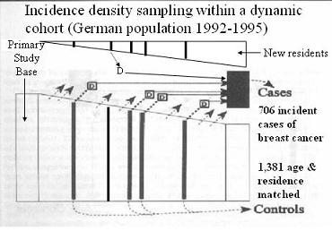

Examples of Incident Density Sampling
Dynamic Primary Study Base
Lead Author(s): Jeff Martin, MD
Example 1: Alcohol Consumption and Breast Cancer
The abstract below (Kropp) is an example from a study using incidence-density sampling.
"In a population-based case-control study in Germany, the authors determined the effect of alcohol consumption at low-to-moderate levels on breast cancer risk among women up to age 50 years. The study included 706 case women whose breast cancer had been newly diagnoses in 1992-1995 and 1,381 residence- and age-matched controls. In multivariate conditional logistical regression analysis, the adjusted odds ratio for breast cancer were 0.71 (95% confidence interval (CI): 0.54, 0.91) for average ethanol intake of 1-5 g/day. 0.67 (95% CI: 0.50, 0.91) for intake of 6-11 g/day, 0.73 (95% CI: 0.51, 1.05) for 12-18 g/day, 1.10 (95% CI: 0.73, 1.65) for 19-30 g/day, and 1.94 (95% CI: 1.18, 3.20) for >= 31 g/day."
"These data suggest that low-level consumption of alcohol does not increase breast cancer risk in premenopausal women."
Study Design
Matching on calendar date tells you that they used incidence density sampling.
The study was carried out in the primary study base of an area of Germany;
- all new cases of breast cancer during a four-year period were identified;
- two controls were selected from the population at the time of each diagnosis (incidence density sampling),
- who were also matched on area of residence and age group.
This has become a very popular design in cancer epidemiology that makes use of a cancer registry to capture nearly all of the cases in a geographic area and the area population becomes a very good primary study base.
Graphic Presentation of Study Population
Below is a graphical representation of the incidence density sampling in this study:

Example 2: Long Term Use of NSAIDs and Lymphoma
Flick examines the association between long-term use of NSAIDs and non-Hodgkin lymphoma (NHL). The study parameters are:
Case-Control Study: In an ongoing population-based case control study in the SF Bay Area.
Cases were identified using Surveillance, Epidemiology, and End Results registry data.
Controls were a random sample of persons identified by random digit dialing;
- resided in the same six counties as the cases at the time of diagnosis;
- frequency-matched to cases by sex, age, and county of residence to ensure that they were from the same study base as the cases.
Findings:
After adjustment for age and sex, there was no consistent association between long-term use and NHL for all NSAIDs combined, aspirin, nonselective NSAIDs, and COX-2 inhibitors.
Incidence density sampling in case-control design has become very popular in cancer epidemiology, and this is a typical example. There are many similar studies in the recent cancer literature.
The study base for this research was six SF Bay Area counties.
- These counties are covered by the Surveillance, Epidemiology, and End Results (SEER) registry, the NCI-funded population-based registry that aims to identify all new cancer diagnoses and follow them for long-term outcomes (End Results).
Since the implicit cohort that gave rise to all the NHL diagnoses during the period these data were collected (from 2001 to 2004) was all the residents of those counties,
- the controls were randomly selected from the same counties.
Incidence density sampling is indicated by selecting the controls by random-digit dialing “ at the time of diagnosis ” of the case to which the control was matched.
- Matching on age and sex is common in cancer studies because they are strong confounders of cancer risk and matching increases the study’s efficiency.
- Matching on county serves to focus further the study base concept by regarding cases and controls in each of the six counties as subcohorts of the overall study.
References
Flick, E. D., Chan, K. A., Bracci, P. M., & Holly, E. A. (2006). Use of nonsteroidal antiinflammatory drugs and non-Hodgkin lymphoma: a population-based case-control study. Am J Epidemiol, 164(5), 497-504).
Kropp, S., Becher, H., Nieters, A., & Chang-Claude, J. (2001). Low-to-moderate alcohol consumption and breast cancer risk by age 50 years among women in Germany. Am J Epidemiol, 154(7), 624-634.